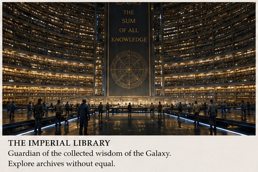

Visit Trantor T-Shirt
Classic design featuring the Academic District skyline.
Buy NowIsaac Asimov's Foundation Trilogy

At the luminous heart of the Galactic Empire lies Trantor: a world unlike any other. Home to over forty billion citizens and crowned by the legendary Imperial Palace, Trantor is more than a capital—it is the living center of civilization itself. Encased beneath vast gleaming domes and stretching across an entire planet-city, Trantor offers visitors a breathtaking encounter with the achievements of twelve thousand years of Imperial history.

Visitors arriving from every corner of the Galaxy will discover a metropolis of incomparable scale and sophistication. From the grand administrative sectors surrounding the Imperial Palace to the endless cultural districts of the upper levels, Trantor thrives day and night with commerce, diplomacy, scholarship, and entertainment. Travelers can stroll through climate-controlled promenades lined with cuisines from millions of worlds, attend performances by artists from the Outer Reach, or experience the awe-inspiring gravity lifts that connect thousands of subterranean levels beneath the metallic surface of the planet. Few destinations can rival the sensation of standing beneath the radiant artificial skies of the Dahl Sector or gazing upon the endless horizon of steel that has made Trantor legendary throughout human space.

No journey to Trantor is complete without exploring its unrivaled intellectual and historical treasures. The famed Imperial Library District houses archives accumulated across the entire history of the Empire, while nearby universities and research institutes continue to shape the future of science, economics, and psychohistory. Guided tours of the historic grounds associated with Hari Seldon and the Foundation Crisis attract scholars and curious travelers alike, offering rare glimpses into the pivotal events that transformed Galactic history. Museums dedicated to robotics, hyperspatial navigation, and Imperial expansion preserve artifacts from worlds long vanished into legend.Despite its colossal scale, Trantor remains remarkably accessible to visitors. An immense transportation network of expressways, gravitic rail lines, and interstellar spaceports allows travelers to move efficiently between sectors and orbital stations. Luxury accommodations range from serene garden-level residences near the surviving Imperial parks to towering skyline hotels overlooking the glittering urban canopy. Whether arriving for diplomacy, commerce, scholarship, or simple wonder, visitors soon understand why generations across the Galaxy have spoken of Trantor with reverence: all roads among the stars ultimately lead here.
Classic design featuring the Academic District skyline.
Buy Now
Hari Seldon's home institution and the craddle to psychohistory.
Go to Streeling University
The largest and most influential academic institution in the Galaxy.
Enter University of Trantor
Home of the Galactic Encyclopaedia - The largest and longest living bosy of knowledge known to humanity.
Discover the Imperial Libray
The place where the Foundation's founding fathers started it all.
Journey to TerminusExplore the rich history and stories of Trantor and the Foundation.